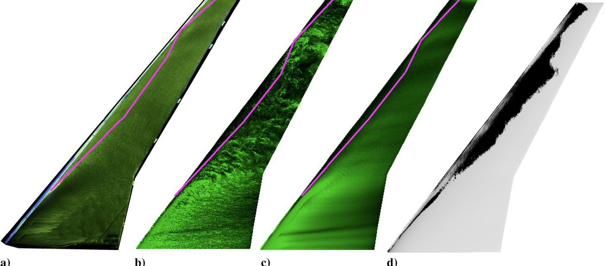

CRM65 swept wing with real and artificial ice (LES)
LES of a swept wing with real scanned ice and with artificial ice shapes, showing where artificial shapes mislead drag predictions.

EnlargeWhat this dataset contains
LES of a swept wing with real scanned ice and with artificial ice shapes, showing where artificial shapes mislead drag predictions.
Source publications
- On the Use of Artificial Ice Shapes for Large-Eddy Simulations in Aircraft IcingB. Bornhoft, P. Moin, S.S. Jain, S.T. Bose · Journal of Aircraft, 2025
- Large-eddy simulations of the CRM65 swept wing under real and artificial icing conditionsB.J. Bornhoft, S.S. Jain, S.T. Bose, P. Moin · AIAA SCITECH 2024 Forum, 2024
How it will appear in FROST
Every FROST record carries its conditions, instruments, uncertainty, and provenance. This is the planned record header for this dataset.
Related records

Wall-modeled LES of NACA 23012 with laser-scanned ice
Wall-modeled LES of an airfoil carrying five laser-scanned IRT ice shapes, validated against tunnel loads and surface pressure.

Rough-wall modeling for LES of rime-iced airfoils
A rough-wall model for LES over scanned rime roughness that removes most of the lift and drag error of smooth-wall simulation.

Conjugate heat transfer over scanned ice roughness (LES)
LES of heat transfer in boundary layers over laser-scanned ice roughness, coupled to the solid, and compared with IR thermography.